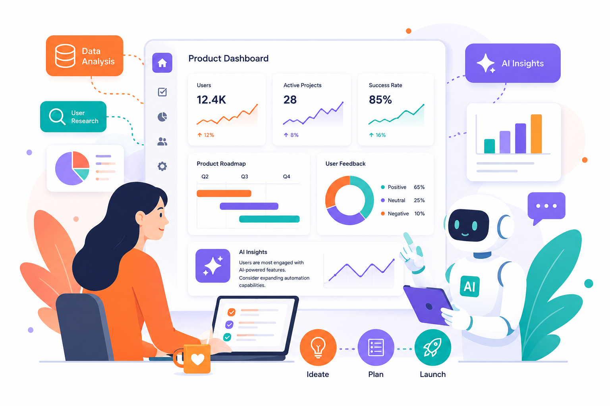

AI产品经理工作台
基于飞书AI的多维决策支持系统
将决策周期从 4-6周 缩短到 1-2周，让数据与经验完美融合

硬件产品经理的新品决策困境
信息分散在多个渠道
用户评论、行业报告、竞品动态...
手工整理耗时长，难以系统化
决策因素复杂，容易遗漏
市场、用户、技术、成本、风险...
如何权衡？经验 vs 数据？
AI分析结果难以融入PM经验
数据说一套，直觉说一套
如何实现真正的人机协作？
我们的解决方案
信息源协同
自动采集和整合用户反馈、行业数据、竞品信息、成本数据、供应链信息等多维信息源，建立统一的信息库
量化决策框架
将决策分解为五个维度（市场吸引力、用户需求强度、产品可行性、商业价值、风险等级），每个维度都有具体的量化指标
AI驱动分析
利用NLP、数据分析等AI技术，自动进行情感分析、关键词提取、主题聚类、评分计算等工作
人机协作
产品经理可以通过评论、权重调整、场景选择等方式将自己的品味和直觉集成到AI分析中
核心价值
决策科学性
基于多维数据的量化框架，减少主观偏差，提高决策的可重复性和可追踪性
决策效率
自动化的信息采集和分析，减少产品经理的重复性工作，大幅缩短决策周期
决策质量
系统化的信息整合和风险评估，帮助发现遗漏的因素和潜在风险
组织学习
积累历史决策数据，建立可持续优化的决策模型，形成组织的产品规划知识库
工作流程
1
信息收集与整合
自动采集社交媒体、电商评价、行业报告等多源数据，手动导入BOM成本和供应链信息
2
AI分析与量化评分
NLP情感分析、关键词提取、主题聚类，计算五维度评分和风险评估
3
PM审视与品味集成
产品经理添加专业评论、调整权重、选择决策场景，融入经验判断
4
决策与方案生成
综合评分、生成决策建议、自动生成多套产品方案并对比分析
💬 PM专业评论